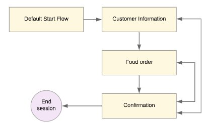
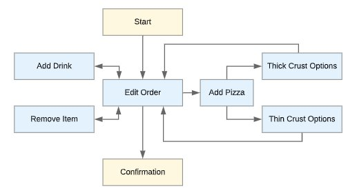
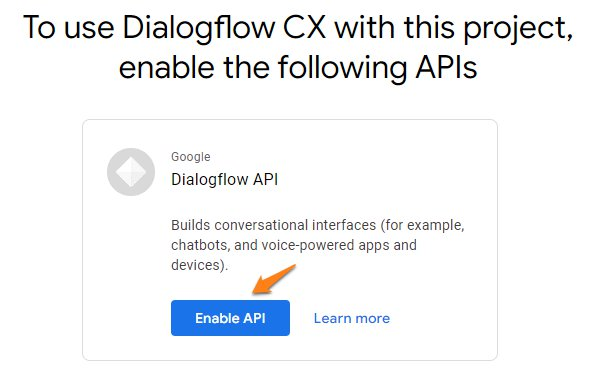
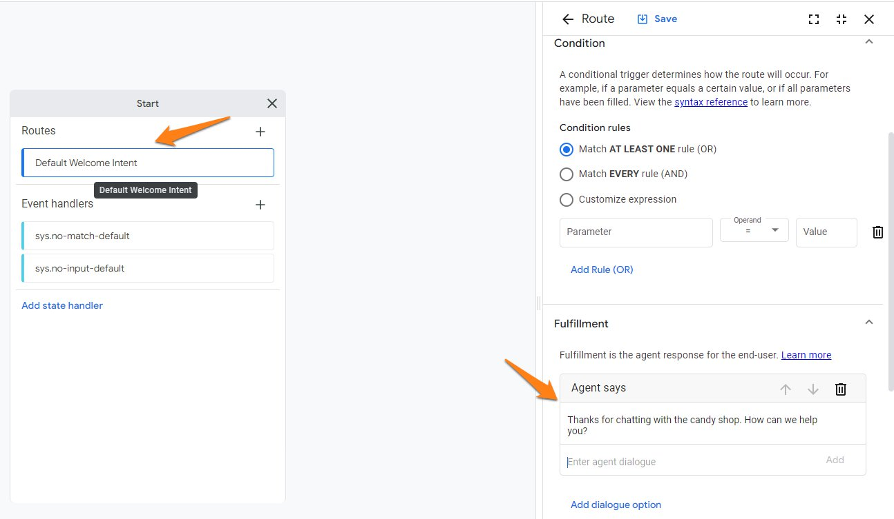
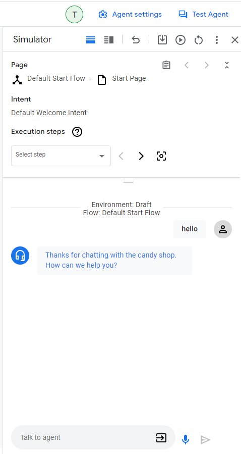

Building a DialogFlow CX Agent
Terminology
- Agents - Agent is DialogFlow’s term for bot. An agent is a natural language understanding module that understands the nuances of human language. You design and build a Dialogflow agent to handle the types of conversations required for your system.
- Flows - Used to define topics and the associated conversational paths. Here’s an example of different flows that might be built for a pizza delivery agent.

- Pages - Pages are configured to collect information from the end user that is relevant for the conversational state represented by the page. See the below example of different pages in blue that might be used for a Food Order flow.

- Entity Types and Parameters - If you are familiar with other bot engines, you might know the term slots and slot types. Entity types and parameters are essentially the same. Entity types control how data from end users can be inputted. With entity types, many come predefined such as Number Sequence. Entity types that come predefined are called system entities and entity types that you create are called custom entities. For example, you might create a custom entity type for pizza toppings that only accepts a predefined list of topppings. Parameters capture and reference values that have been supplied by the end user. Each parameter is assigned an entity type. For example, the parameter account number might have an entity type of number sequence.
- Forms - A form is built for each page and it is a list of parameters that should be collected from the end user for the page.
- Intents - An intent categorizes a users intention based on data called training phrases. Training phrases are example phrases of what end users might type or say that would match up to the intent.
- Fulfillment - Fulfillment enables the virtual agent to respond to the end users question, query for information, or terminate a session. It is possible to call mutiple fulfillments during one turn.
- State Handlers - Used to control the conversation by creating responses for end users and/or by transitioning the current page.
Reference page - https://cloud.google.com/dialogflow/cx/docs/basics
Building a DialogFlow CX Agent
Today we’re going to build a virtual agent for a candy shop. The candy shop is hoping to use DialogFlow CX to accomplish two items: 1. Allow customers to place orders & 2. Give out store hours. Let’s get to work!
- Navigate to the Google CCAI Console & ensure that you are in the project that you created in the previous section.
- If you receive this prompt when you navigate to the link, just enable the API.

- Create a new agent and give it a descriptive name like “Candy Shop Bot”
- The first task we will do is edit the Default Welcome Intent. Click on the start button in the middle of the page and then on Default Welcome Intent. Under fulfillment, let’s delete the default phrases and add our own; “Thanks for chatting with the candy shop. How can we help you?” Be sure to click save.

- Before we move to the next step, let’s go over the Test Agent tool. In the top right, click test agent. If you say hello, you should get back the response we just created!

- Next we are going to create our intents & pages…